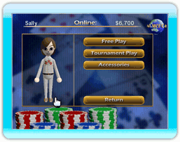

12 |
Tournois CWF Nintendo |
 |

Vous pouvez choisir de participer à un tournois CWF Nintendo (Nintendo Wi-Fi Connection) qui sera similaire au mode « un seul joueur ». Le droit d'entrée sera déduit de votre portefeuille CWF Nintendo (Nintendo Wi-Fi Connection) au début de la partie, et non lorsque vous chercherez des joueurs pour se joindre à vous. Si vous êtes déconnecté au cours d'une partie, vos gains ne seront pas enregistrés.
Si vous participez à un tournois à un seul coup, vous devez entièrement le terminer pour ajouter les gains à votre portefeuille. En revanche, si vous remportez une main dans un tournois à coups multiples, vous vous assurez une place dans le coup suivant et pouvez reprendre la partie ultérieurement. Lorsque vous remplissez les conditions pour poursuivre un tournois, cela active le bouton « Continuer le tournois ». Si vous vous inscrivez dans un tournois alors que vous en avez un autre en cours, vous perdrez votre place dans ce dernier. Cependant, vous pouvez entamer des parties en mode simulation sans perdre votre place dans le tournois. Les gains sont répartis en fonction du droit d'entrée versé par les joueurs. Première place : 50 % du pot ; deuxième place : 30 % du pot et troisième place : 10 % du pot. Il faut terminer un tournois pour débloquer le suivant. |
 |
 |
 |